colors_continuous_viridis
colors_discrete_metro
colors_discrete_circle
colors_continuous_viridis
colors_continuous_magma
colors_continuous_bluepinkyellow
new_color_scheme(c('#d73027','#f46d43','#fdae61','#fee090','#ffffbf','#e0f3f8','#abd9e9','#74add1','#4575b4'))
new_color_scheme(c("#8ecae6", "#219ebc", "#023047", "#ffb703", "#fb8500"))
new_color_scheme(c("#cdb4db", "#ffc8dd", "#ffafcc", "#bde0fe", "#a2d2ff"))
new_color_scheme(c("#ef476f", "#ffd166", "#06d6a0", "#118ab2", "#073b4c"))
new_color_scheme(c("#390099", "#9e0059", "#ff0054", "#ff5400", "#ffbd00"))
new_color_scheme(c("#233d4d", "#fe7f2d", "#fcca46", "#a1c181", "#619b8a"))
new_color_scheme(c("#006ba6", "#0496ff", "#ffbc42", "#d81159", "#8f2d56"))
new_color_scheme(c("#ffc857", "#e9724c", "#c5283d", "#481d24", "#255f85"))
new_color_scheme(c("#edae49", "#d1495b", "#00798c", "#30638e", "#003d5b"))
new_color_scheme(c("#9b5de5", "#f15bb5", "#fee440", "#00bbf9", "#00f5d4"))
new_color_scheme(c("#072ac8", "#1e96fc", "#a2d6f9", "#fcf300", "#ffc600"))
new_color_scheme(c("#003f5c","#2f4b7c","#665191","#a05195","#d45087","#f95d6a","#ff7c43","#ffa600"))
new_color_scheme(c("#E64B35","#4DBBD5","#00A087","#3C5488","#F39B7F","#8491B4",
"#91D1C2","#DC0000","#7E6148","#B09C85"))
colors_discrete_metro[2]
colors_continuous_bluepinkyellow[4:8]
c(colors_continuous_bluepinkyellow, colors_discrete_metro)
p1 <-
animals %>%
tidyplot(family, color = family) %>%
add_count_bar()
p2 <-
animals %>%
tidyplot(animal, color = animal) %>%
add_count_bar()
p3 <-
animals %>%
dplyr::filter(family != "Reptile") %>%
tidyplot(family, color = family) %>%
add_count_bar()
p1
# default
p1 %>% adjust_colors()
p1 %>% adjust_colors(colors_discrete_metro)
# correct number
p1 %>% adjust_colors(colors_discrete_metro)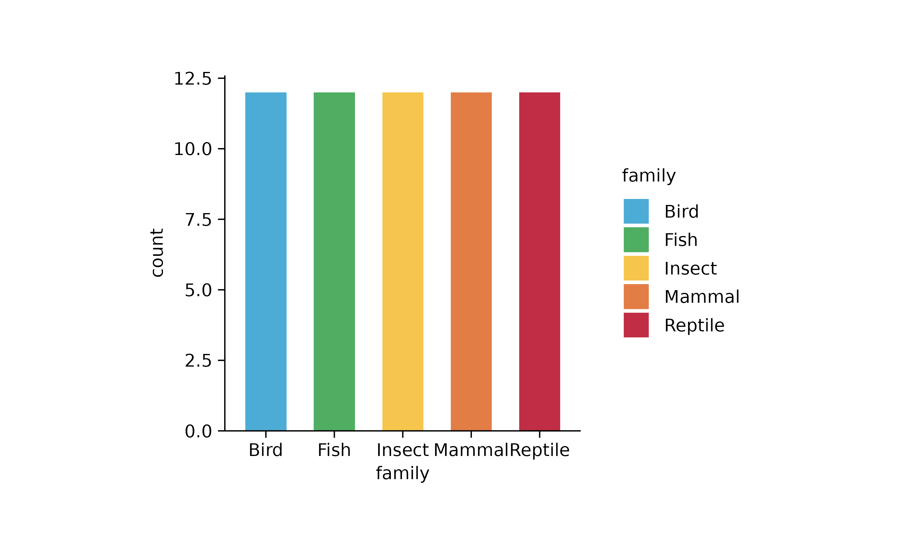
# too many
p1 %>% adjust_colors(colors_continuous_bluepinkyellow)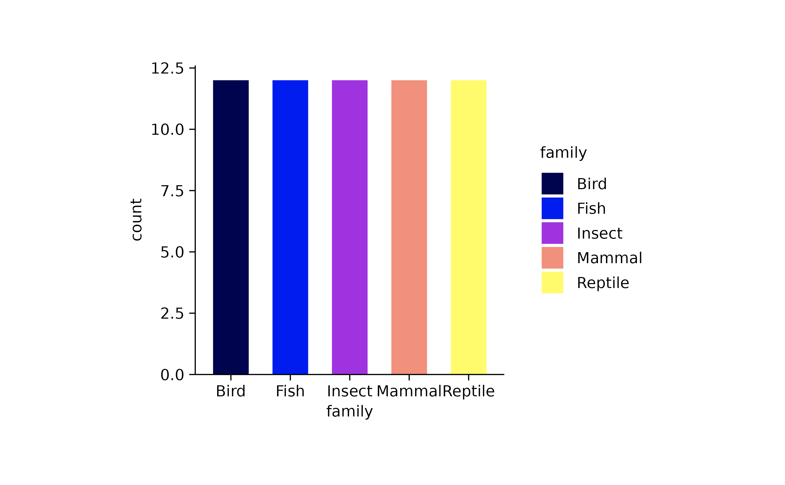
p1 %>% adjust_colors(colors_continuous_plasma)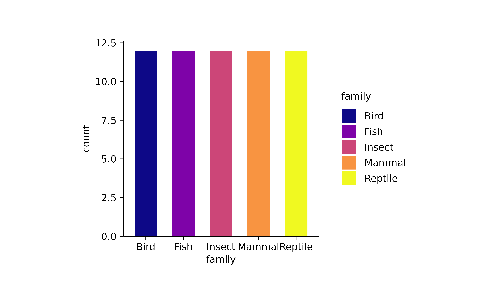
# too few
p1 %>% adjust_colors(colors_discrete_metro[1:3])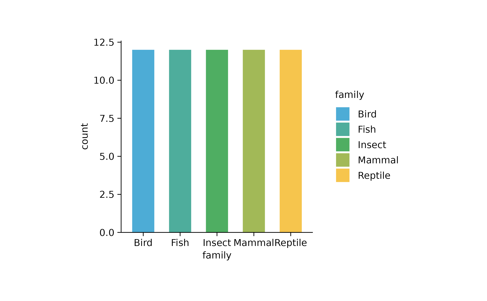
p2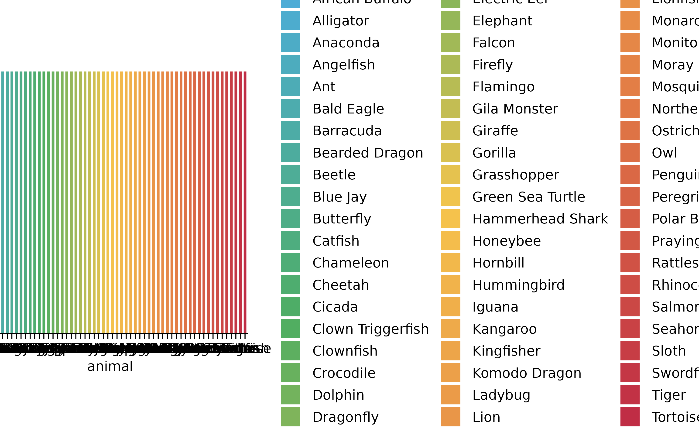
# default
p2 %>% adjust_colors()
p2 %>% adjust_colors(colors_discrete_metro)
# too few
p2 %>% adjust_colors(colors_continuous_bluepinkyellow)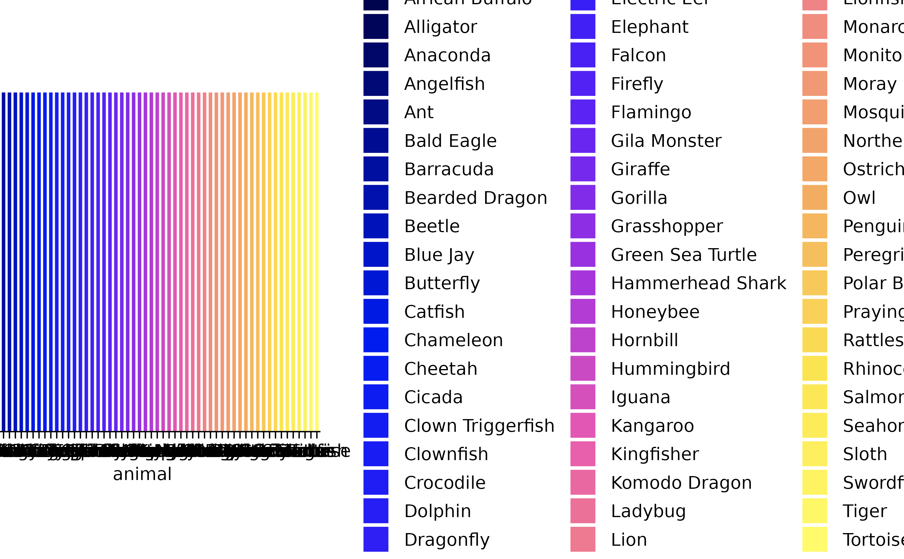
p3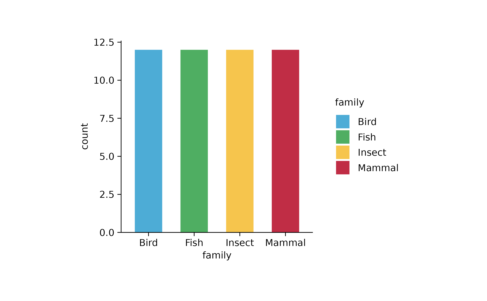
# default
p3 %>% adjust_colors()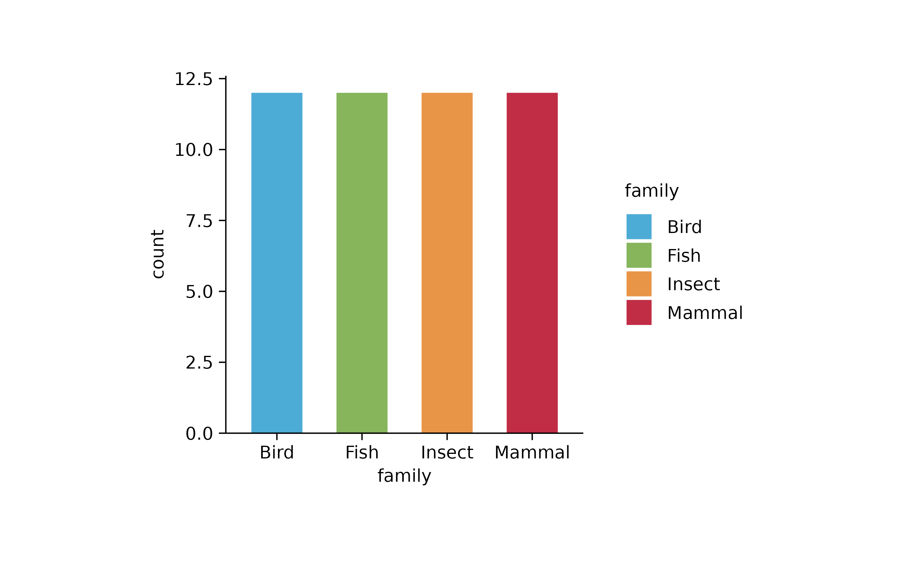
p3 %>% adjust_colors(colors_discrete_metro)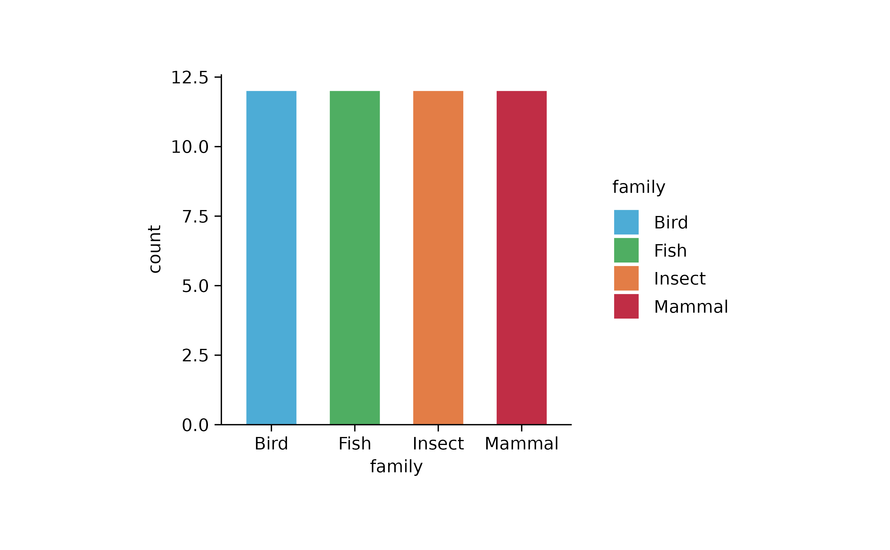
# too many
p3 %>% adjust_colors(colors_continuous_viridis)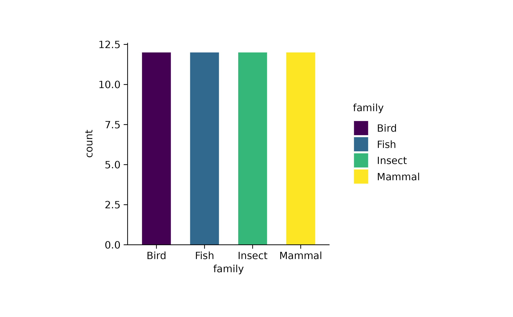
# named vector
p3 %>% adjust_colors(c("Bird" = "#007700"))
p3 %>% adjust_colors(c("Bird" = "#007700", "Insect" = "#f80398"))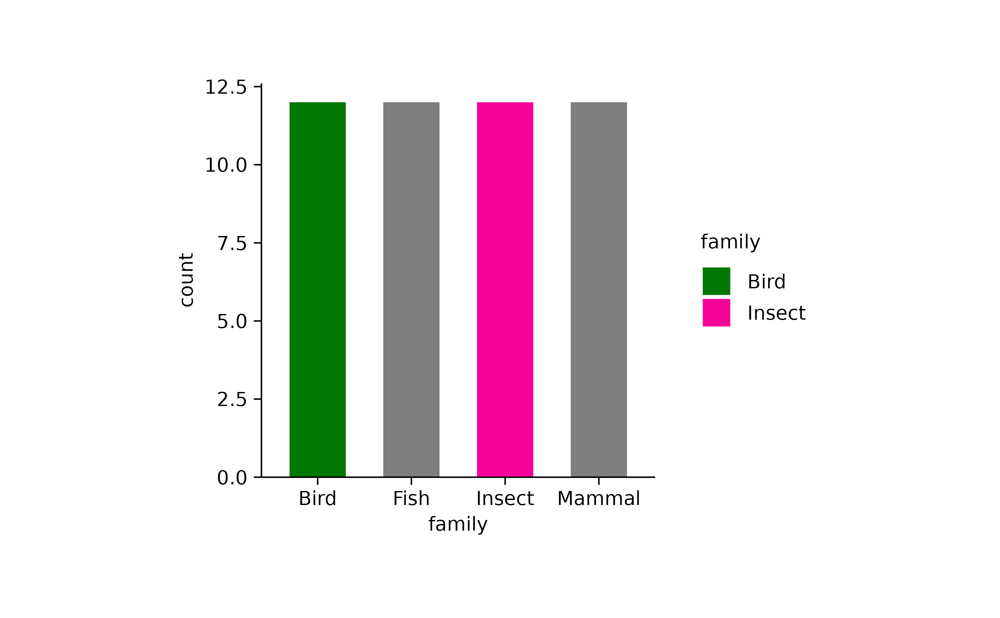
p3 %>% adjust_colors(c("Bird" = "#007700", "Not_there" = "#f8f300"))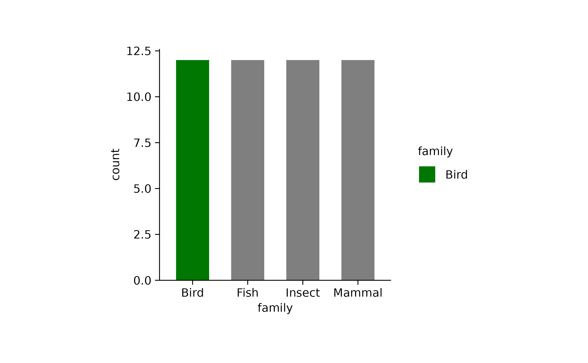
colors_continuous_infernocolors_continuous_inferno
A tidyplots color scheme with 265 colors, downsampled to 42 colors.
c(
"#000004FF","#02020EFF","#07051AFF","#0D082AFF","#150B37FF","#1F0C48FF","#290B54FF","#350A60FF","#3E0966FF","#490B6AFF","#540F6DFF","#5D126EFF","#68166EFF","#71196EFF","#7C1D6DFF","#85216BFF","#8F2568FF","#992766FF","#A22B62FF","#AD305DFF","#B53458FF","#C03952FF","#C73E4CFF","#D04545FF","#D84C3EFF","#DF5237FF","#E55C30FF","#EB6429FF","#F06F20FF","#F47918FF","#F7840FFF","#F98E09FF","#FB9B06FF","#FCA60CFF","#FCB115FF","#FBBF24FF","#F9C932FF","#F6D746FF","#F3E259FF","#F1EE73FF","#F3F68BFF","#FCFFA4FF")